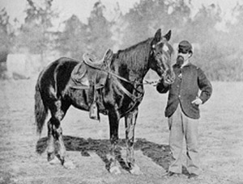

Boyer writes to his father about the whereabouts of his brother. He also suggests that the war may be over soon.
Boyer describes battles throughout northern Virginia and reports that half a company was missing after one fight.
Boyer describes regimental drilling and asks for news from home.
Boyer provides a description of the Chancellorsville battle in Virginia.
Boyer writes home with news that a friend has been killed.
Boyer's letter gives a description of an engagement between Federal and Confederate troops in Maryland.
Boyer provides news of recent battles in Virginia.
Boyer informs his father that he received a box of food and tells him about his prediction of heavy fighting to come this summer.
Crum writes to her lover about the latest stories from home.
Boyer provides an account of Grant's armies in Virginia.
Boyer celebrates the end of the war and expresses a longing to return home.
Boyer is upset that his regiment is not being discharged.
Peter Boyer writes to his father about his possibilities for discharge, about the work going on at home, and about the whereabouts of his brother John.
Letter written by Peter Boyer's father tells about his brother's return home and mentions his request for money.
A friend writes to Peter Boyer and Cyrus Engle about the work he is doing at home and when they might be discharged.
Peter Boyer writes to his brother Cyrus at home about letters he has and has not received, and asks Cyrus to save some girls for him until he gets home.
Return to the Franklin Additional War Years Personal Papers